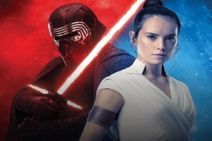
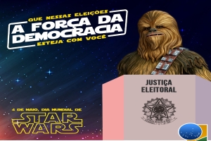
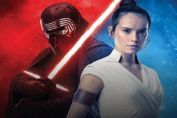
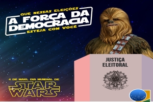

Império contesta segurança.
Hoje pela manhã o imperador Sheev Palpatine deu a seguinte declaração para o pessoal que o apoia no cural apelido carinhso dado por ele aos seus apoiadores que ficam toda manhã aguadando seu pronunciamento . Questionado sobre a segurança das urnas ele fez a seguinte declaração "Tem que ver isso ai,ok".
Previas acaloradas.
Candidato da situação Ben solo ex padawan de luke Skywallker candidato ao senado não participa de debate alegando probelmas familiares Meu pai não esta bem anda com dores abdominais e reclama de uma dor que atravessa o seu peito. Já a rival Rey Skywallker alega que isso foi uma extratégia covarde do rival.
Rebelde no palanque.
O ex gângster e hoje militante das forças rebeldes, Chewbacca fala de eleições livres e que o povo tem que lutar pela democracia e um governo mais justo. Após discurso nosso reporter perguntou quais as espectavivas sobre o sobrinho Lowbacca ter entrado para academia Jedi.